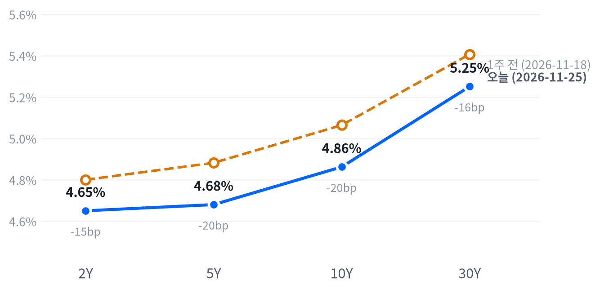

아시아 메모리주 급락을 이어받아 S&P 500은 2% 가까이 낮게 출발했지만, 개장 첫 30분을 저점으로 종일 되올라 0.25% 하락으로 끝났다. 같은 날 10월 근원 PCE 물가가 예상을 웃돌고 3분기 GDP가 4.3%로 상향됐는데도 국채 금리는 전 구간에서 내렸다.
우리는 장기물 하락을 AI 하드웨어 매도와 유가 급등 속 보험성 국채 매수로 보고, 주식이 진정되면 되돌려질 것으로 본다. 12월 3일까지 10년물 금리가 되올라오는지가 이 판단을 확인하고, 반도체·AI 하드웨어 업종의 상대 약세는 2거래일째 이어졌다.
11월 25일 뉴욕 증시는 아시아의 반도체·메모리 급락을 그대로 이어받아 열렸다. S&P 500은 전일 종가보다 1.95%, 나스닥은 3.26% 낮게 출발했고, 개장 첫 30분이 그날의 저점이었다. 이후 오후까지 꾸준히 되올라 두 지수는 낙폭의 대부분을 되찾았다. 시장 일각에서는 대만 시장에서 최소 30년 만에 가장 큰 규모의 마진 청산이 일어나 금요일 마진 대출이 사상 최대인 15억 달러 줄었고, 레버리지 투자자들의 강제 매도가 급락을 키웠다는 의견도 있었다. 같은 날 08:30(ET)에는 10월 근원 PCE 물가가 예상을 웃돌고 3분기 GDP가 상향됐지만, 국채 10년물 금리는 6.4bp 내렸다.
장기 금리가 강한 지표와 반대로 움직인 것이 이날의 핵심 쟁점이다. 12월 9일 FOMC 인상 확률은 약 98%로 보도돼, 이번 지표가 단기 금리에 더할 재료는 적었다. 우리는 장기물 하락을 AI 하드웨어 매도와 유가 급등 속에 투자자들이 위험 회피 수단으로 국채를 사들인 결과로 보고, 방어 수단으로 국채를 샀다는 보도도 같은 방향이다. 가장 강한 반론은 인상이 사실상 확정된 상태에서 뜨거운 물가가 추가 긴축 기대를 거쳐 장기 성장·물가 기대를 낮췄다는 해석이다. 이 경우 주식이 안정돼도 장기 금리는 오르지 않는다. 두 설명 모두 이날 장단기 금리차가 좁혀진 것과 맞고, 10년물 금리가 어디로 갈지 시장이 어떻게 보는지 재는 선물·옵션 자료는 구하지 못해 시장 기대와 우리 해석의 차이는 모른다. 물가 판단도 소비자물가 전년비 두 지표가 빠진 가용 지표 기준이다. 주식 쪽에서는 갭을 메운 회복이 넓었고, 하락은 기술 업종에 가장 크게 남았다. XLK는 11월 23일 종가 대비 S&P 500보다 3.31%p 뒤처져, 황 복귀일 반등을 쏠린 매도 포지션의 되감기로 본 판단(11월 23일)을 2거래일째 뒷받침하는 방향이다. 시장 일각에서는 팩트셋을 인용해 코어위브의 5년 만기 부도 위험 보험 비용이 1,332bp로 6개월 만에 두 배 이상 뛰었고, MUFG의 데릭 핼페니가 임박한 연준 금리 인상이 부채 기반 AI 확장에 더 큰 위협이 된다고 봤다는 의견도 있었다. 이런 자금 조달 비용의 재평가는 포지션 되감기도 불확실성 제거도 아닌 셋째 설명이라, 기술 업종과 S&P 500의 수익률 차이만으로는 구분되지 않는다.
이 하루로 새 아이디어를 내지 않는다. 반도체·AI 하드웨어 업종의 SPY 대비 3개월 상대수익률은 한 주 사이 5.13%p 더 악화됐고, 이날의 넓은 회복은 소재·산업재·금융이 하루 오른 것이라 업종 교체로 보기에는 이르다. 원화 현금·단기채 쪽에서는 인상이 거의 다 가격에 들어가 미국 2년물 금리가 강한 지표에도 3.9bp 내렸다. 단기 금리가 지표에 덜 민감해졌다는 관찰은 가능하지만 하루치다. 장기물 방향을 10년물 선물이나 장기채 ETF로 표현하는 비용(롤·캐리·스프레드)은 자료가 없어 따지지 못한다. 판단의 시계는 12월 3일(10년물)과 12월 4일(기술 업종 대 S&P 500)이다. 11월 26일 추수감사절 휴장과 27일 조기 폐장으로 거래가 얇은 구간이 끼어 있고, 12월 3일 황 CEO의 상원 은행위원회 증언과 12월 4일 엔비디아 분기 보고서 제출 기한, 11월 고용보고서가 그 끝에 몰려 있다.
보험성 매수 판단은 16:00 ET 기준 10년물 금리의 11월 25일 4.862% 대비 12월 3일 변화로 확인한다. +13.3bp 이상이면 판단을 뒷받침하고, -13.3bp 이하이면 판단이 약해져 인상 경로가 장기 기대를 낮췄다는 평탄화 설명을 우선 설명으로 본다. 그 사이이면 판단을 보류한다. 방향이 판단대로 나와도 같은 기간 S&P 500 누적 등락률이 0% 미만이면 주식이 진정되지 않은 채 금리가 오른 것이라 원인은 판단하지 않는다. 기술 업종의 포지션 되감기 판단은 11월 23일 종가 대비 12월 4일 종가의 XLK 누적 등락률에서 S&P 500 누적 등락률을 뺀 값이 -3.44%p 이하이면 뒷받침되고, +3.44%p 이상이면 약해진다.
출처: CNBC, ING, Investing.com
| 지수 | 종가 | 등락 | 기준일 |
|---|---|---|---|
| 닛케이225 | 57,011.62 | -2.78% | 11월 25일 |
| 항셍 | 21,966.01 | -1.14% | 11월 25일 |
| 상해종합 | 3,476.47 | -2.03% | 11월 25일 |
| DAX | 24,702.13 | -1.26% | 11월 25일 |
| FTSE100 | 10,426.94 | -0.38% | 11월 25일 |
| 유로스톡스50 | 5,894.46 | -1.82% | 11월 25일 |
| VIX | 28.29 | +1.93p | 11월 25일 |
VIX 등락은 포인트다.
아시아와 유럽이 먼저 내렸고 미국이 그 하락을 이어받았다. 닛케이가 2.78%, 상해종합이 2.03%, 항셍이 1.14% 내렸고, 한국에서는 SK하이닉스가 11.05%, 삼성전자가 9.87% 급락했다. 유럽도 유로스톡스50이 1.82%, DAX가 1.26% 내렸고, FTSE100은 0.38% 하락에 그쳤다.
S&P 선물(ES)은 전날 18:00(ET) 첫 봉이 고점(7,224)이었고, 밤새 밀려 09:00(ET) 봉에서 저점 7,058을 찍으며 2.35% 범위를 움직였다. 나스닥 선물(NQ)은 같은 시각 사이 3.77% 범위로 더 크게 밀렸다. 저점은 08:30(ET) 10월 PCE·3분기 GDP·실업수당 청구·내구재 주문 발표 직후 봉에 찍혔지만, 30분 단위 자료로는 그 하락 가운데 지표의 몫과 아시아발 매도의 몫을 나눌 수 없다. 현물은 S&P 500 -1.95%, 나스닥 -3.26%, 러셀2000 -0.83%로 낮게 출발했고, 10:00(ET)에는 신규주택 판매가 나왔다.
S&P 500은 내렸지만, 구성 종목에 같은 비중을 적용하면 올랐다. 동일가중 지수의 수익률이 시가총액가중 지수보다 1.12%p 높았다는 뜻이다. 시가총액 비중이 큰 종목들의 약세가 지수 하락에 상대적으로 크게 작용했을 가능성을 시사한다. 세 지수 모두 고점권에서 끝났다.
고점권·저점권은 종가가 그날 고가와 저가 사이 어디에서 끝났는지를 날마다 재어 모은 이력(지수 3개의 일별 관측값 2,259개)에서 다시 잰 경계로 가른다. 관측값을 낮은 순으로 세웠을 때 위에서 4분의 1 지점 이상이면 고점권, 아래에서 4분의 1 지점 이하면 저점권 마감이다.
아시아발 AI 하드웨어 매도가 개장 갭을 만들었고, 아침 지표가 주식에 준 영향은 따로 가를 수 없었고, 국채 금리는 지표가 가리킨 방향과 반대로 내렸다. 유가는 별개 재료로 올랐다. VIX는 1.93p 오른 28.29로, 최근 2년(504거래일) 가운데 이보다 높았던 날이 19일뿐인 수준이다. 장중 회복을 이끈 뉴스는 확인되지 않았다. 저점이 개장 첫 30분이고 이후 꾸준히 올라 특정 시각의 재료와 잇기 어렵다. 미국 무역대표부가 무역법 301조에 따라 14개 경제권에 새 관세를 제안했다는 보도도 나왔지만, 여름 관세를 대체하는 성격이라 실질 추가 부담은 크지 않다는 평가가 함께 나왔다. 11월 26일은 추수감사절 휴장이고, 다음 거래일인 27일은 조기 폐장이다.
출처: BBC, Fortune
| 지수 | 종가 | 등락률 |
|---|---|---|
| 러셀2000 | 2,704.06 | +0.71% |
| S&P500 가치주 | 235.56 | +0.52% |
| 다우존스 | 50,182.95 | +0.33% |
| S&P500 | 7,182.78 | -0.25% |
| 나스닥 | 23,585.80 | -0.62% |
| S&P500 성장주 | 123.28 | -1.03% |
| 섹터 | 등락률 |
|---|---|
| 소재 | +2.07% |
| 부동산 | +0.92% |
| 커뮤니케이션서비스 | +0.89% |
| 산업재 | +0.83% |
| 에너지 | +0.74% |
| 금융 | +0.71% |
| 유틸리티 | +0.48% |
| 필수소비재 | +0.46% |
| 경기소비재 | -0.20% |
| 헬스케어 | -0.56% |
| 기술 | -0.83% |
개장 갭을 대부분 메운 하루였다. S&P 500은 0.25% 내린 7,183, 나스닥은 0.62% 내린 23,586으로 끝났고, 다우는 0.33%, 러셀2000은 0.71% 올랐다. 두 지수의 종가 기준 움직임은 미미했지만 장중 폭은 컸다. 성장주가 1.03% 내리고 가치주가 0.52% 올라 같은 지수 안에서 스타일이 갈렸다.
장 초반 매도는 개장 직후 바닥을 찍었고, 그 뒤로는 전약후강이었다. S&P 500은 7,060에서 출발해 개장 첫 30분에 6,970까지 밀린 뒤 14:30(ET) 봉에서 7,199까지 올라 하루 범위의 위쪽에서 끝났다. 나스닥은 시가보다 2.7% 높게 끝났다. 엔비디아는 전일 종가보다 7.31% 낮은 144.02달러에 출발해 149.30달러로 마감하며 낙폭을 절반 가까이 줄였다.
하락은 기술 한 업종에 몰렸다. 지수 하락 0.25% 가운데 기술 업종의 추정 기여도가 -0.28%p로 하락분보다 컸고, 커뮤니케이션서비스(+0.12%p)·금융(+0.08%p)·산업재(+0.05%p)가 일부를 메웠다. 헬스케어(-0.05%p)와 경기소비재(-0.03%p)는 하락을 보탰고, 업종 합으로 설명되지 않는 부분은 -0.19%p다. 11개 섹터 가운데 8개가 올랐고 소재가 2.07%로 가장 강했다. 오른 업종이 많았고, 하락은 기술 업종에 가장 크게 남았다.
추정 기여도는 업종 비중을 직접 받지 않아, 최근 252거래일 지수·업종 수익률로 추정한 비중을 곱한 값이다. 소재와 부동산은 비중을 추정할 수 없어 빠졌다.
| 만기 | 종가 | 전일比(bp) | 1주 전 | 주간 변화(bp) |
|---|---|---|---|---|
| 2Y | 4.650% | -3.9 | 4.800% | -15.0 |
| 5Y | 4.680% | -5.5 | 4.882% | -20.2 |
| 10Y | 4.862% | -6.4 | 5.064% | -20.2 |
| 30Y | 5.251% | -5.7 | 5.407% | -15.6 |
국채 금리는 뉴욕 16:00 ET 무렵 장중 값(전 거래일·1주 전도 같은 시각)이다. 장 마감 종가와 다를 수 있다. 이날과 전 거래일 값은 레피니티브(네이버), 1주 전 값은 트레이드웹(CNBC) 기준이다.
근원 물가가 예상을 웃돈 날 국채 금리는 전 구간에서 내렸고, 장기물이 더 내렸다. 2년물은 3.9bp 내린 4.650%, 10년물은 6.4bp 내린 4.862%, 30년물은 5.7bp 내린 5.251%다. 10년물 하락은 평소 하루 움직임과 비슷한 크기였고, 레벨은 여전히 최근 2년(504거래일) 가운데 높은 쪽 11% 안이다.

커브 차트의 「오늘」은 11월 25일, 「1주 전」은 11월 18일의 16:00 ET 무렵 값이다. 1주 전보다 2년물은 15.0bp, 5년물과 10년물은 각각 20.2bp, 30년물은 15.6bp 낮다.
하루로는 10년물이 2년물보다 더 내려 2s10s가 23.7bp에서 21.2bp로 2.5bp 좁혀진 불 플래트닝이고, 5s30s는 57.1bp다. 한 주로 봐도 2년물이 15.0bp 내리는 동안 10년물이 20.2bp 내려 같은 불 플래트닝이 이어졌다. PCE 물가의 상승세에도 투자자들이 방어 수단으로 국채를 사들였다는 보도가 나왔다. 12월 인상이 약 98%로 보도될 만큼 가격에 들어가 있어 2년물에 남은 재평가 여지는 작았을 가능성이 있다. 장기물이 더 내린 이날의 모양은 보험성 매수와 장기 기대 하향 두 설명 모두와 맞아, 하루 가격만으로는 둘을 구분하기 어렵다.
금리를 실질금리와 기대인플레로 나눈 최신 자료는 11월 24일 것이다. 그날 10년물은 1bp 내렸고 실질금리는 그대로, 기대인플레가 1bp 내렸다. 5거래일로 넓히면 19bp 하락 가운데 10bp가 실질금리, 9bp가 기대인플레였다. 같은 날 하이일드 스프레드는 3.72%로 하루에 9bp, 5거래일 사이 29bp 넓어졌다. 모두 이날 PCE·GDP 발표 전까지 잰 값이라, 이날 장기물 하락이 실질금리에서 나왔는지 기대인플레에서 나왔는지는 11월 25일 실질금리가 갱신돼야 판단할 수 있다.
주식과 금리의 관계도 바뀌었다. 최근 60거래일 두 자산은 느슨하게 같은 방향으로 움직여, 서로 반대로 움직이던 직전 60거래일과 부호가 바뀌었다. 이날도 주식 약세와 금리 하락이 함께 나왔다. 이 관계가 이어지면 금리 상승을 곧 주식의 부담으로 읽는 전제는 통하지 않고, 금리가 주식 불안을 따라 내리는 날이 늘어난다.
주식과 금리의 상관계수는 최근 60거래일 0.20, 직전 60거래일 -0.30이다.
5년 뒤 5년 명목금리 5.13%, 실질 3.00%(11월 24일 기준). 기대인플레 쪽에서 계산한 값과 어긋나지 않았고, 위험 프리미엄이 섞인 값이다.
출처: CNBC, Investing.com
| 입찰 | 규모 | 낙찰 | 응찰배율 | 간접 | 직접 | 딜러 | 판정 |
|---|---|---|---|---|---|---|---|
| 7년물 | 440억 달러 | 4.708% | 2.43배 (2.48배) | 58.2% (63.6%) | 33.2% (24.7%) | 8.6% (11.7%) | 엇갈림 |
재무부는 11월 25일 7년물 440억 달러를 낙찰금리 4.708%에 팔았다. 규모는 직전 같은 만기 입찰(10월 29일)의 440억 달러와 같았다. 응찰배율은 2.43배로 직전 6회 평균 2.48배보다 0.05배 낮았다. 딜러 비중은 8.6%로 평균보다 3.1%p 낮았다. 해외 중앙은행·기관 수요의 대용인 간접 낙찰 비중은 58.2%로 평균보다 5.4%p 낮았고, 직접 낙찰 비중은 33.2%로 평균 24.7%보다 높았다. 응찰배율과 간접 비중이 평균을 밑도는 동안 직접 응찰자가 그 몫을 가져가 딜러가 떠안은 물량은 평균보다 적었고, 이 입찰은 엇갈림으로 본다.
| 통화쌍 | 종가 | 등락률 | 기준일 |
|---|---|---|---|
| DXY | 103.699 | -0.12% | 11월 25일 |
| USD/KRW | 1,343.43 | +0.12% | 11월 25일 |
| USD/JPY | 159.222 | -0.01% | 11월 25일 |
| EUR/USD | 1.0979 | +0.10% | 11월 25일 |
주식과 금리가 크게 흔들린 날 달러는 거의 움직이지 않았다. 달러지수는 0.12% 내린 103.699, 유로/달러는 0.10% 오른 1.0979였고, 달러/엔은 159.222엔으로 보합이었다. 원/달러는 0.12% 오른 1,343원이지만, 레벨은 최근 2년(504거래일) 가운데 이보다 낮았던 날이 33일뿐이다.
미국 금리가 전 구간에서 내려 금리차로는 달러가 약해질 재료였고 달러지수도 소폭 내렸지만, 상대국 금리를 함께 재지 않아 그 몫은 확인할 수 없다. 원화는 달러 약세에도 달러에 약했다. 한국 반도체주가 급락한 날과 겹치지만 외국인 수급 자료가 없어 그 연결은 확인되지 않았다.
원자재·환율은 뉴욕 16:00 ET 가격, 전 거래일 같은 시각 대비다. 결제가와 다를 수 있다.
| 품목 | 종가 | 등락률 |
|---|---|---|
| WTI | $84.13 | +3.30% |
| Brent | $90.73 | +2.76% |
| 천연가스 | $3.674 | -0.33% |
| 금 | $3,602.60 | +0.63% |
유가는 주식과 따로 올랐다. WTI는 3.30% 오른 84.13달러, 브렌트는 2.76% 오른 90.73달러로 끝났고, 천연가스는 0.33% 내린 3.674달러다. 금은 0.63% 오른 3,602.60달러다.
유가 상승의 재료는 보도로만 전해졌다. 시장 일각에서는 호르무즈 해역 LNG 운반선 폭발과 사우디 정유시설 피격 소식이 전해지며 WTI유가 올랐다는 의견도 있었다. 이 사건들을 직접 전한 원 보도는 확인하지 못해, 실제 공급 차질이 있었는지는 판단하지 않는다. WTI는 새벽 03:30(ET) 봉의 80.13달러 저점에서 오후 내내 올라 15:30(ET) 봉의 84.14달러 고점 부근에서 끝나, 매수가 마감까지 이어졌다. 브렌트는 WTI보다 6.60달러 비싸 전 거래일(6.85달러)보다 차이가 줄었고, WTI가 더 크게 올랐다. 표의 WTI는 1월물, 브렌트는 2월물이라 가격 차에는 만기 차이도 들어 있다.
금은 10:00(ET) 봉에서 시가보다 3.43% 낮은 3,453.80달러까지 밀렸다가 오후에 되올라 상승으로 끝났다. 그 급락의 원인은 확인되지 않았다. 08:30(ET) 지표 발표 뒤이고 10:00(ET) 신규주택 판매 발표와 같은 시각이지만, 그 발표와 금 가격을 잇는 근거는 없다.
원자재·환율은 뉴욕 16:00 ET 가격, 전 거래일 같은 시각 대비다. 결제가와 다를 수 있다. 하루 움직임은 최근 60거래일 평균 하루 변동 대비 WTI 1.13배다.
엔비디아(-3.91%)는 반도체·AI 하드웨어 관련주의 약세를 2거래일째 키웠다. 황 CEO 복귀 기대가 식고 AI 투자의 지속성 우려가 남아 반도체가 지수를 끌어내렸다는 보도가 나왔다. 같은 날 밴스 부통령은 법무부로부터 황이 수사 대상이 아니라는 확답을 받았다고 밝혔고, 트럼프 대통령은 수사가 있었고 혐의를 벗었다고 말해 두 발언이 서로 달랐다. 중국 정보기관이 앨리스 황에게 접근한 정황이 의회에 비공개로 보고됐다는 보도도 나왔다. 엔비디아는 11월 23일 165.05달러에서 2거래일 만에 149.30달러로 내려 황 복귀일 상승분의 상당 부분을 반납했다. 키움증권 한지영 연구원은 젠슨 황 복귀 이후 급등분이 반납된 것을 차익실현과 함께 AI 산업의 FCF 악화·데이터센터 규제 같은 근본 불안이 쉽게 풀리지 않는다는 우려가 반영된 것으로 봤고, 관세 추가 부과는 무역법 301조 조사의 연장선이라 새 악재로서의 파급력이 제한적이며 현 시장의 가격 결정력은 관세보다 AI 불확실성에 있다고 진단했다.
아마존(-3.12%)은 AI 관련 대형 기술주 약세 속에 경기소비재 업종의 하락을 키웠지만, 확인된 재료는 없다.
메타(+3.40%)는 커뮤니케이션서비스 업종의 상승을 이끌었지만, 확인된 재료는 없다.
애플(+0.43%)은 기술 하드웨어 업종에서 소폭 올랐고, 확인된 재료는 없다.
샌디스크(-22.02%)는 메모리 관련주의 약세를 키웠지만, 확인된 재료는 없다. 다른 출처로 다시 확인하지 못한 등락률이다.
출처: CNBC, CBS
다섯 건의 새 발표가 나왔지만 미국 경기 국면은 성장 보합·물가 재가속인 비용압박을 11월 10일부터 12일째 유지한다. 10월 PCE 물가가 물가 점수를 0.722에서 0.85로 끌어올렸고, 3분기 GDP 상향과 내구재 주문·신규주택 판매가 더해진 성장 점수는 0.093으로 여전히 보합 범위다. 물가 쪽 판단은 소비자물가 전년비 두 지표가 빠진 가용 지표 기준이다. 점수가 현재 국면을 가리키므로 국면이 옮겨 갈 곳이 없다.
새 발표는 국면 안에서 두 힘의 긴장을 키웠다. 근원 PCE 물가가 전년비 3.3%로 올라섰고 3분기 성장률은 4.3%로 상향됐다. 반면 10월 실질 소비는 보합이었고 GDP 상향의 큰 몫은 소프트웨어 투자의 측정 수정에서 나와, 성장이 빨라졌다고 읽기에는 이르다. 국면을 다시 열 자료는 12월 4일 11월 고용보고서다.
고용축은 개선이고, 일곱 중 넷이 개선, 둘은 보합, 하나는 반대다. 근거는 임금과 고용이다. 시간당 임금이 0.37%(전월 0.26%) 올랐고 비농업 고용이 165K(전월 60K) 늘어 둘 다 뚜렷하게 개선했다. 이날 나온 실업수당 청구는 주간 수치로는 좋아졌지만, 계속 청구의 4주 평균은 1,708K에서 1,725K로 늘어 추세는 완만하게 악화했고 이것이 판정과 반대로 가는 지표다. 개선의 세기는 미미하다. 고용축 +0.402
| 지표 | Actual | Forecast | Previous | 발표일 | 컨센 대비 | 직전 대비 | 추세 |
|---|---|---|---|---|---|---|---|
| 구인건수(9월) | 7,523K | — | 7,190K | 2026-09 기준월 | 개선 | 보합 · 3개월 평균 7,435K → 7,349K | |
| 신규 실업수당 청구 | 189,000 | 200,000 | 202,000 | 2026-11-25 (11월 21일 주간) | 하회▼ | 개선 | 보합 · 4주 평균 197K → 196K |
| 신규 청구 4주 평균 | 196,000 | — | 197,500 | 2026-11-25 (11월 21일 주간) | 개선 | 개선(미미) · 4주 평균 198K → 196K | |
| 계속 실업수당 청구 | 1,697,000 | — | 1,792,000 | 2026-11-25 (11월 14일 주간) | 개선 | 악화(완만) · 4주 평균 1,708K → 1,725K | |
| 비농업 고용 변화(10월) | +165K | — | +60K | 2026-11-06 | 개선 | 개선(뚜렷) · 3개월 평균 +28K → +137K | |
| 실업률(10월) | 4.1% | — | 4.2% | 2026-11-06 | 개선 | 개선(미미) · 3개월 평균 4.20% → 4.13% | |
| 평균시간당임금 MoM(10월) | +0.37% | — | +0.26% | 2026-11-06 | 개선 | 개선(뚜렷) · 3개월 평균 +0.20% → +0.32% |
노동부에 따르면 11월 21일 주 신규 청구는 189,000건으로 전주(202,000건, 1,000건 하향 수정)보다 13,000건 줄어, ING가 전한 예상 200,000건을 밑돌았다. 4주 평균은 196,000건이다. 11월 14일 주 계속 청구는 1,697,000건으로 전주 수정치 1,792,000건보다 95,000건 줄었다.
노동부 원문을 보면 계속 청구 감소의 대부분은 계절 조정에서 나왔다. 계절조정 전 계속 청구는 1,562,814건으로 5,578건 주는 데 그쳤고, 계절 요인은 82,453건 증가를 예상했다. 계절조정 전 신규 청구는 212,945건으로 15,894건 늘었지만, 계절 요인이 30,549건 증가를 예상해 조정치는 줄었다. 미시간의 계절조정 전 계속 청구는 46,315건으로 전주 69,232건에서 22,917건 줄었고, 캘리포니아는 25,966건 늘었다.
11월 19일 문제가 된 계속 청구 급증은 미시간의 되돌림과 함께 풀렸다. 계절조정 전 전국 기준으로는 거의 줄지 않아, 이 한 주로 노동시장 둔화가 번지지 않았다고 확인하지는 못한다. 그래서 이 발표는 고용축 개선 판정과 비용압박 국면 판단에 새 방향을 주지 않는다.
생산·활동축은 악화이고, 아홉 중 다섯이 악화, 둘은 보합, 둘은 반대다. 근거는 주택과 무역이다. 기존주택 판매가 397만 건에서 375만 건으로 줄어 뚜렷하게 악화했고, 무역수지 적자는 3개월 평균으로 크게 불었으며, 주택착공의 3개월 평균도 1,330K에서 1,260K로 완만하게 악화했다. 이날 나온 세 발표는 판정과 반대쪽이다. 3분기 GDP는 4.3%로 상향됐고, 내구재 주문은 3개월 평균이 -0.85%에서 +0.79%로 올라 추세가 완만하게 개선됐으며, 신규주택 판매는 701K로 늘었다. 이 셋을 더해도 판정은 악화에 남았고, 세기는 완만하다. 생산·활동축 -0.543
| 지표 | Actual | Forecast | Previous | 발표일 | 컨센 대비 | 직전 대비 | 추세 |
|---|---|---|---|---|---|---|---|
| 필라델피아 연은 제조업지수(11월) | 6.3 | — | 20.9 | 2026-11-19 | 악화 | 악화(뚜렷) · 3개월 평균 33.0 → 21.7 | |
| 주택착공(10월) | 1,309K | — | 1,191K | 2026-11-18 | 개선 | 악화(완만) · 3개월 평균 1,330K → 1,260K | |
| 산업생산 MoM(10월) | -0.43% | — | +0.60% | 2026-11-17 | 악화 | 악화(미미) · 3개월 평균 +0.19% → +0.01% | |
| 내구재주문 MoM(10월) | +0.22% | — | +1.99% | 2026-11-25 | 악화 | 개선(완만) · 3개월 평균 -0.85% → +0.79% | |
| 공장주문 MoM(9월) | +1.84% | — | +0.33% | 2026-09 기준월 | 개선 | 악화(미미) · 3개월 평균 +1.35% → +0.98% | |
| 건설지출 MoM(9월) | -1.85% | — | +1.98% | 2026-09 기준월 | 악화 | 개선(미미) · 3개월 평균 -0.18% → -0.01% | |
| 신규주택판매(10월) | 701K | — | 614K | 2026-11-25 | 개선 | 보합 · 3개월 평균 653K → 665K | |
| 기존주택판매(10월) | 375만 | — | 397만 | 2026-11-12 | 악화 | 악화(뚜렷) · 3개월 평균 4,127K → 3,883K | |
| 무역수지(9월) | -$105.05B | — | -$105.74B | 2026-09 기준월 | 개선 | 악화(뚜렷) · 3개월 평균 -66.6 → -101.2 | |
| 실질GDP QoQ 연율(3분기 2차) | +4.3% | — | +2.2% | 2026-11-25 | 개선 | — |
BEA에 따르면 3분기 실질 GDP는 연율 4.3% 늘어 속보치 3.4%에서 0.9%p 상향됐다. 2분기는 2.2%였다. 발표 전 컨센서스는 확인하지 못했다.
상향은 최종 수요 쪽에서 나왔다. 민간 국내 최종판매는 5.8%로 속보치 4.9%보다 높아졌고, 실질 GDI는 4.4%, GDP와 GDI의 평균도 4.4%다. BEA는 투자 상향이 지식재산 생산물, 특히 소프트웨어에서 나왔다고 밝혔고, 그 근거는 노동통계국의 소프트웨어 출판 생산자물가 수정이다. 소비는 의약품·컴퓨터 소프트웨어·휘발유 같은 상품에서 올라가고 헬스케어 서비스에서 내려갔다. 기업이익은 2,060억 달러 늘어 2분기(3,840억 달러)보다 증가폭이 작았다.
상향의 상당 부분이 소프트웨어 투자의 가격 측정 수정에서 나와, 실물 수요가 그만큼 빨라졌다고 보기는 어렵다. 그래도 최종판매 5.8%는 3분기 수요가 강했다는 것을 확인한다. 이미 지난 분기의 수치라 4분기 성장 판단을 바꾸지 않고, 성장 점수도 보합 범위에 남았다.
Census에 따르면 10월 내구재 주문은 3,467억 달러로 0.2%(FRED 기준 0.22%) 늘어 9월 2.0% 증가에서 둔화했다. 컨센서스는 확인하지 못했다.
운송 제외 주문은 0.5% 늘었다. 국방 제외 주문은 0.4% 늘었다. Census는 기계류가 22개월 가운데 21개월 늘며 8억 달러(1.8%) 증가로 이번 증가를 이끌었다고 밝혔다. 비국방 자본재 주문은 0.8% 늘었고, 국방 자본재 주문은 3.6% 줄었다. 미충족 주문은 0.8% 늘어 28개월 가운데 27개월 증가했다.
헤드라인 둔화는 9월 큰 폭 증가 뒤의 기저이고, 기계류와 비국방 자본재 주문이 늘어 설비투자 흐름은 이어졌다. 추세 판정이 개선(완만)으로 돌아선 것도 이 흐름이지만, 생산·활동축의 악화 판정을 뒤집을 크기는 아니다.
Census에 따르면 10월 신규주택 판매는 연율 701K로 9월 614K보다 14.2% 늘었다. Census는 이 증가의 90% 신뢰구간(±22.6%)이 0을 포함한다고 밝혀, 통계적으로 의미 있는 증가로 보기 어렵다. 컨센서스는 확인하지 못했다.
판매 대기 재고는 47만 채다. 재고 개월 수는 8.0개월이다. 판매가격 중위값은 391,300달러다. 재고는 9월보다 1.5% 줄었고, 중위 판매가는 1년 전보다 3.2% 낮다.
판매가 늘었지만 가격이 내리고 재고가 줄어 할인 판매 성격이 섞였다. Census는 추세를 확인하려면 4개월이 걸린다고 밝혀, 한 달 급증을 주택 수요 회복으로 읽기는 이르다. 생산·활동축에서는 보합 추세로 들어갔다.
소비축은 개선이고 새 발표는 없다. 소매판매의 3개월 평균이 +0.28%에서 +0.83%로 오른 것이 판정을 받치고, 미시간대 소비자심리는 보합이다. 이날 PCE에서 10월 실질 소비가 보합으로 나왔지만, 이 축의 점수에는 들어가지 않는다. 소비축 +0.42
| 지표 | Actual | Forecast | Previous | 발표일 | 컨센 대비 | 직전 대비 | 추세 |
|---|---|---|---|---|---|---|---|
| 소매판매 MoM(10월) | +0.21% | — | +0.83% | 2026-11-17 | 악화 | 개선(완만) · 3개월 평균 +0.28% → +0.83% | |
| 미시간대 소비자심리(10월) | 48.0 | — | 48.1 | 2026-11-20 | 악화 | 보합 · 3개월 평균 49.8 → 49.3 |
물가축은 재가속이다. 물가 축은 8개 지표 중 6개로 산출했다. 2025년 10월 CPI 비교 기준값이 공식적으로 제공되지 않아 2026년 10월 전년 동월 대비 지표 2개를 계산에서 제외했다. 재가속은 가용 지표 기준의 신호이며, 결측에 따라 물가 판단이 달라질 수 있다. 여섯 중 셋이 재가속, 셋은 교착이다. 소비자물가 전월비의 3개월 평균이 +0.04%에서 +0.46%로, 생산자물가가 +0.17%에서 +0.72%로 뚜렷하게 올라선 것이 판정을 받친다. 이날 나온 PCE 물가는 전년비가 3.84%, 근원이 3.26%로 올랐지만 3개월 평균의 변화가 작아 두 지표의 추세는 교착이다. 재가속의 세기는 완만하다. 물가축 +0.85
| 지표 | Actual | Forecast | Previous | 발표일 | 컨센 대비 | 직전 대비 | 추세 |
|---|---|---|---|---|---|---|---|
| PPI 최종수요 MoM(10월) | +0.35% | — | +1.41% | 2026-11-13 | 하락 | 재가속(뚜렷) · 3개월 평균 +0.17% → +0.72% | |
| CPI MoM(10월) | +0.35% | — | +0.65% | 2026-11-10 | 하락 | 재가속(뚜렷) · 3개월 평균 +0.04% → +0.46% | |
| Core CPI MoM(10월) | +0.30% | — | +0.33% | 2026-11-10 | 하락 | 재가속(뚜렷) · 3개월 평균 +0.14% → +0.31% | |
| PCE 물가 YoY(10월) | 3.84% | — | 3.67% | 2026-11-25 | 상승 | 교착 · 3개월 평균 3.55% → 3.66% | |
| Core PCE YoY(10월) | 3.26% | 3.2% | 3.14% | 2026-11-25 | 상회▲ | 상승 | 교착 · 3개월 평균 3.07% → 3.15% |
| 미시간대 1년 기대인플레(10월) | 4.7% | — | 4.6% | 2026-11-20 | 상승 | 교착 · 3개월 평균 4.53% → 4.43% |
BEA에 따르면 10월 PCE 물가는 전월비 0.3%, 근원도 0.3% 올랐고, 전년비로는 3.8%, 근원 3.3%다(FRED 기준 3.84%·3.26%, 9월 3.67%·3.14%). ING가 전한 근원 전년비 예상은 3.2%였고, 헤드라인 전년비는 예상에 부합했다는 보도가 나왔다.
헤드라인 전월비는 9월 0.5%에서 낮아졌지만, 근원은 9월과 같은 0.3%를 유지했다. 실질 소비지출은 58억 달러 줄어 월간 0.1% 미만 감소로 사실상 보합이었다. 명목 소비 638억 달러 증가 가운데 서비스가 521억 달러, 상품이 118억 달러였다. 개인소득은 2,018억 달러(0.7%) 늘었는데, BEA는 정부 사회보장 급여 증가가 주로 메디케어 개선기금 보험료 환급과 관련된 일회성 지급을 반영한다고 밝혔다. 저축률은 4.1%다.
근원 물가가 0.3% 속도를 유지해 연준의 12월 인상 근거는 강해졌다. ING는 근원 PCE가 3개월 연속 0.3%대로 올라 3개월 연율 3.6%에 이르렀다며 12월 9일 25bp 인상이 사실상 확정됐다고 봤다. 반면 실질 소비 보합과 일회성 소득은 4분기 소비 둔화의 근거가 된다. 그래서 이 발표는 물가 점수를 끌어올려 비용압박 판단을 굳혔지만, 성장 쪽에는 둔화 신호를 더했다.
직전 대비는 Actual을 Previous와 비교한 것이고, 추세는 최근 3개월 평균을 그 앞 3개월 평균과 비교한 것입니다(주간 실업수당 청구는 4주 평균끼리). 추세의 세기는 그 지표가 평소 움직이는 폭에 견준 크기이고, 작은 변화는 보합으로 봅니다. 분기 지표인 GDP는 두 비교가 같은 숫자를 보므로 직전 대비만 싣습니다.
연준의 다음 수는 12월 9일 FOMC의 25bp 인상이라는 판단을 유지하고, 시점도 그대로다. CME FedWatch 기준 12월 인상 확률은 98%와 97.8%로 매체마다 보도됐다. 관측 시각이 확인되지 않아 11월 23일 보도치와 같은 기준으로 비교하지는 않는다. 근원 PCE가 예상을 웃돌아 인상 근거는 강해졌다. 소비자물가 전년비 두 지표가 빠진 가용 지표 기준의 물가 재가속 신호에 PCE까지 같은 방향을 더했다.
11월 25일 10월 PCE 물가가 예상을 밑돌고 12월 인상 확률이 84% 아래로 내려가면 판단을 수정한다는 전날의 조건은 충족되지 않았다. 근원 전년비는 예상을 웃돌았고, 보도된 확률은 그보다 훨씬 높다. 남은 반증 조건은 아래와 같고, 다음 확인은 12월 4일 11월 고용보고서다.
12월 9일 FOMC 전까지 연준 성명이나 의장 발언이 추가 인상 여지를 닫으면 12월 인상 중심 판단을 철회한다. 12월 4일 11월 고용보고서에서 비농업 고용이 감소로 돌아서고 실업률이 10월 4.1%보다 오르면 12월 인상 중심 판단을 수정한다.
물가 재가속이 생산자물가에 이어 10월 근원 PCE로 이어지고 12월 인상이 사실상 가격에 들어가, 실질금리가 정점을 지나 완화가 다시 시작된다는 기대는 여전히 멀다. 여기서 물가 재가속은 소비자물가 전년비 두 지표가 빠진 가용 지표 기준의 신호다. 그래서 듀레이션에는 비우호를 유지한다. 30년물은 11월 20일부터 4거래일째 5.4% 아래에 있어, 5거래일 머물면 채권을 중립으로 되돌리는 조건에 하루가 남았다. 근원 CPI 전월비가 0.2% 이하로 내려와도 중립으로 되돌리고, 30년물이 5.05%를 밑돌면 우호로 본다. 금은 보유비용 하락 경로가 약해졌지만 지정학·재정 헤지 수요가 남아 중립에 둔다. 금 20일 수익률이 +15%를 넘거나 10년 실질금리가 다시 내려가면 우호를 검토한다.
성장 점수는 3분기 GDP 상향에도 보합 범위이고, 10월 실질 소비 보합은 4분기 둔화 쪽 근거를 더했다. 이익 성장 기대가 밸류에이션을 받치는 힘과 높은 실질금리와 인상 경로가 만드는 할인율 압박이 맞서 주식은 중립을 유지한다. ISM 제조업 PMI가 50 위에서 이어지거나 10년물이 4.5%를 밑돌면 주식을 우호로 다시 본다. 에너지는 지정학 프리미엄이 3~6개월 구조 변수가 아니라 이벤트 변수라 중립이다. 호르무즈 인근 사고 보도가 실제 통항·공급 차질로 확인되는지가 이 판단을 다시 열 조건이다.
물가 둔화가 실질금리 차를 좁혀 달러를 약하게 한다는 경로는 물가 재가속과 12월 인상 경로로 막혔다. 이 가운데 물가 재가속은 가용 지표 기준이라 확정된 판단이 아니다. 미국 정책금리 경로가 위로 옮겨 가 달러 강세 쪽을 받치지만, 금리차 자체와 다른 중앙은행의 경로는 재지 않았고 달러 레벨도 이미 높아 우호까지는 올리지 않는다. 12월 50bp 인상 확률이 50%를 넘으면 우호로, 달러지수가 20일 동안 3% 이상 내리거나 FedWatch에 인하 확률이 다시 나타나면 비우호로 바꾼다.
이 그룹은 매크로 국면과 따로 움직이고, 지금은 가격과도 따로 움직인다. 기업의 AI 데이터센터 투자가 메모리 수급을 끈다는 구조 판단에 따라 메모리는 우호를 유지하지만, 메모리·반도체 주가는 한 달 사이 크게 밀렸다. 가격 약세가 수요 전망의 변화인지는 공급업체의 가이던스로 확인해야 해, 3~6개월 시계의 방향은 아직 바꾸지 않는다. AI 인프라는 투자 사이클 자체는 우호적이지만 높은 장기금리의 할인율 부담과 발주자의 자금 조달 부담이 상쇄해 중립이다. 마이크론 등 주요 업체의 가이던스 상향이 끊기면 메모리 판단을 다시 열고, 30년물이 5.4% 위로 다시 올라서거나 하이퍼스케일러의 4분기 설비투자 가이던스가 내려가면 AI 인프라 판단을 다시 연다.
근원 PCE가 예상을 웃돌고 신규 청구가 예상보다 적었는데도, 국채 금리는 발표 뒤 전 구간에서 내려 끝났다. 지표가 정책금리 기대를 더 끌어올렸다는 흔적은 2년물 종가에 없다. 주가지수 선물은 발표 직후 30분 봉에서 저점을 찍었지만 아시아발 매도와 겹쳐 지표의 몫은 가를 수 없다. GDP·내구재 주문·신규주택 판매는 컨센서스를 확인하지 못해 예상과 얼마나 달랐는지 잴 수 없다.
출처: ING, CNBC, Investing.com
| 지수 | 순위(5거래일 전) | 1개월 | 3개월 | SPY 대비 3개월 | 대비 변화 | 12-1 모멘텀 | 변동성 | 1일 VaR 95% | 베타 | 50/200일선 | 52주 고점 대비 |
|---|---|---|---|---|---|---|---|---|---|---|---|
| 경기소비재 XLY | 6(4) | +1.8% | +1.6% | +8.4%p | +2.0%p | +1.9% | 22.9% | 1.8% | 0.94 | 위/위 | -5.1% |
| 주택건설 XHB | 7(10) | +4.5% | -0.3% | +6.6%p | +6.6%p | -3.0% | 30.5% | 2.5% | 0.75 | 위/위 | -13.7% |
| 에너지 XLE | 8(9) | -10.7% | -1.6% | +5.2%p | +4.5%p | +57.4% | 25.1% | 3.0% | 0.00 | 아래/위 | -13.0% |
| 금융 XLF | 9(7) | +1.1% | -2.0% | +4.8%p | +1.4%p | +9.4% | 17.9% | 1.8% | 0.56 | 위/위 | -4.5% |
| 은행 KBE | 11(13) | -3.0% | -5.8% | +1.1%p | +2.6%p | +17.1% | 18.1% | 1.7% | 0.46 | 아래/아래 | -10.0% |
| 초대형주 Top 50 XLG | 13(11) | -9.5% | -8.4% | -1.6%p | -1.1%p | +8.9% | 24.4% | 2.3% | 1.20 | 아래/아래 | -11.9% |
| 산업재 XLI | 14(16) | -3.0% | -8.6% | -1.8%p | +2.4%p | +13.2% | 20.9% | 2.0% | 0.86 | 아래/아래 | -12.4% |
| 소형주 IWM | 16(17) | -4.0% | -10.1% | -3.3%p | +1.8%p | +18.0% | 20.9% | 1.9% | 0.90 | 아래/아래 | -11.6% |
| 방산 ITA | 17(19) | 0.0% | -11.8% | -5.0%p | +3.2%p | +3.0% | 23.6% | 2.2% | 0.77 | 아래/아래 | -18.4% |
| 소형 성장 IWO | 18(18) | -4.3% | -12.4% | -5.6%p | +1.4%p | +12.4% | 25.9% | 2.4% | 1.13 | 아래/아래 | -14.3% |
| 소프트웨어 IGV | 19(12) | -15.0% | -13.9% | -7.0%p | -6.2%p | +9.4% | 32.6% | 3.6% | 1.11 | 아래/위 | -15.7% |
| 전력망 GRID | 22(22) | -10.2% | -17.3% | -10.4%p | -0.3%p | +13.9% | 33.8% | 4.3% | 1.33 | 아래/아래 | -24.5% |
| 모멘텀 팩터 MTUM | 23(23) | -17.9% | -19.0% | -12.1%p | -1.8%p | +24.4% | 37.4% | 3.7% | 1.57 | 아래/아래 | -28.6% |
| 반도체·AI 하드웨어 SMH | 24(24) | -24.3% | -26.3% | -19.4%p | -5.1%p | +65.0% | 61.3% | 7.0% | 2.62 | 아래/아래 | -36.8% |
| 금속·광업 XME | 25(25) | -15.5% | -30.9% | -24.1%p | -4.3%p | +10.3% | 38.4% | 4.1% | 1.44 | 아래/아래 | -36.0% |
| 지수 | 순위(5거래일 전) | 1개월 | 3개월 | SPY 대비 3개월 | 대비 변화 | 12-1 모멘텀 | 변동성 | 1일 VaR 95% | 베타 | 50/200일선 | 52주 고점 대비 |
|---|---|---|---|---|---|---|---|---|---|---|---|
| 필수소비재 XLP | 1(1) | +5.9% | +9.2% | +16.0%p | +4.4%p | +16.3% | 17.9% | 1.4% | 0.01 | 위/위 | -0.3% |
| 헬스케어 XLV | 2(2) | +2.5% | +7.5% | +14.3%p | +4.8%p | +17.3% | 19.5% | 2.1% | 0.37 | 위/위 | -3.1% |
| 저변동성 SPLV | 3(3) | +3.5% | +4.3% | +11.2%p | +4.5%p | +6.9% | 12.7% | 1.0% | 0.20 | 위/위 | -0.6% |
| 배당 SCHD | 4(5) | +0.5% | +2.1% | +8.9%p | +4.5%p | +34.9% | 14.7% | 1.4% | 0.31 | 위/위 | -2.5% |
| 유틸리티 XLU | 5(6) | +1.8% | +1.7% | +8.6%p | +4.3%p | -1.1% | 15.4% | 1.4% | 0.24 | 위/아래 | -6.7% |
| 퀄리티 팩터 QUAL | 10(8) | -3.2% | -3.6% | +3.3%p | +1.1%p | +16.3% | 16.9% | 1.6% | 0.80 | 아래/위 | -5.1% |
| 지수 | 순위(5거래일 전) | 1개월 | 3개월 | SPY 대비 3개월 | 대비 변화 | 12-1 모멘텀 | 변동성 | 1일 VaR 95% | 베타 | 50/200일선 | 52주 고점 대비 |
|---|---|---|---|---|---|---|---|---|---|---|---|
| 유럽 VGK | 12(14) | -2.4% | -7.7% | -0.9%p | +1.6%p | +13.7% | 17.1% | 1.5% | 0.63 | 아래/아래 | -8.6% |
| 일본 EWJ | 15(15) | -8.4% | -9.0% | -2.1%p | +0.5%p | +21.5% | 24.7% | 2.1% | 1.11 | 아래/아래 | -12.2% |
| 중국 MCHI | 20(21) | -5.4% | -15.4% | -8.6%p | +1.3%p | -19.3% | 18.9% | 1.9% | 0.41 | 아래/아래 | -27.3% |
| 신흥국 EEM | 21(20) | -9.8% | -16.6% | -9.8%p | -0.7%p | +18.8% | 31.5% | 2.9% | 1.43 | 아래/아래 | -20.8% |
| 지수 | 순위(5거래일 전) | 1개월 | 3개월 | SPY 대비 3개월 | 대비 변화 | 12-1 모멘텀 | 변동성 | 1일 VaR 95% | 베타 | 50/200일선 | 52주 고점 대비 |
|---|---|---|---|---|---|---|---|---|---|---|---|
| S&P 500 SPY | – | -6.9% | -6.8% | 0.0%p | – | +16.3% | 20.1% | 1.9% | 1.00 | 아래/아래 | -8.0% |
| S&P 500 동일가중 RSP | – | -0.8% | -2.2% | +4.6%p | – | +18.5% | 15.2% | 1.5% | 0.62 | 위/위 | -3.4% |
| 나스닥 100 QQQ | – | -12.1% | -12.0% | -5.2%p | – | +19.7% | 31.2% | 2.9% | 1.49 | 아래/아래 | -16.6% |
가격 기준 시장 국면은 11월 16일부터 8거래일째 단기 약세이고, 직전 국면은 횡보였다. SPY는 716.70으로 50일선(757.85) 아래에 있고, 52주 고점 대비 하락률이 -8.01%로 단기 약세 기준(-5%)을 넘어 있다. 200일선(730.77)도 밑돌지만 200일선이 20거래일 전 725.23보다 높아 장기 약세 조건에는 들지 않았다. 다른 국면으로 넘어가는 조건은 아직 나타나지 않았다.
11월 18일과 비교하면 소프트웨어와 반도체·AI 하드웨어의 상대수익률이 크게 악화됐고 주택건설은 개선됐다. 소프트웨어의 SPY 대비 3개월 상대수익률은 -7.04%p로 한 주 사이 6.18%p 악화돼 순위가 12위에서 19위로 내려갔다. 반도체·AI 하드웨어는 -19.45%p로 5.13%p 더 악화됐고, 순위는 25개 가운데 24위 그대로이며 3개월 수익률은 -26.27%다. 주택건설은 +6.57%p로 6.63%p 개선돼 10위에서 7위로 올랐다. 이날 신규주택 판매 증가와 방향은 같지만, Census가 그 증가를 통계적으로 유의하지 않다고 밝혀 주택 수요 회복의 근거로 삼기는 이르다.
위험 신호는 위험 축소 쪽을 가리킨다. VIX는 28.29로 최근 2년 가운데 이보다 높았던 날이 19일뿐이고, 하이일드 스프레드는 11월 24일 3.72%로 5거래일 사이 29bp 넓어졌다. 같은 날 10년 실질금리는 2.79%로 5거래일 사이 10bp 내렸다. 유동성은 중립이다. 연준 대차대조표로 잰 순유동성은 11월 18일까지 4주 사이 406억 달러 늘었지만, NFCI는 11월 20일 -0.44로 4주 사이 0.02 올라 조금 조였다. 여전히 평균보다는 느슨하다.
강한 PCE·GDP에도 장기물이 내린 것을 AI 하드웨어 매도와 유가 급등 속 보험성 국채 매수로 보는 판단(11월 25일)을 새로 세운다. 출발점은 16:00 ET 기준 10년물 4.862%, S&P 500 종가 7,182.78이다. 보험성 매수 판단은 16:00 ET 기준 10년물 금리의 11월 25일 4.862% 대비 12월 3일 변화로 확인한다. +13.3bp 이상이면 판단을 뒷받침하고, -13.3bp 이하이면 판단이 약해져 인상 경로가 장기 기대를 낮췄다는 평탄화 설명을 우선 설명으로 본다. 그 사이이면 판단을 보류한다. 방향이 판단대로 나와도 같은 기간 S&P 500 누적 등락률이 0% 미만이면 주식이 진정되지 않은 채 금리가 오른 것이라 원인은 판단하지 않는다. 두 날 가운데 16:00 ET 값이 없어도 판단을 보류한다. 13.3bp는 끝점이 10월 29일~11월 25일인 최근 20개 5거래일 구간의 10년물 변화 절댓값 평균이고, 11월 20일 이전 구간은 17:05 ET 종가, 그 뒤는 16:00 ET 값이 섞여 있다. 11월 27일 채권시장 조기 마감과 그 사이 지표·발언·유가 뉴스는 보정하지 않는다.
황 복귀일의 AI 하드웨어 급반등을 쏠린 매도 포지션의 되감기로 보는 판단(11월 23일)은 둘째 날까지 뒷받침 기준에 가까워졌다. 11월 23일 종가 대비 XLK는 162.38에서 155.79로 4.058% 내리고 S&P 500은 0.752% 내려, 차이는 -3.307%p로 뒷받침 기준(-3.44%p)에 0.13%p 모자란다(전 거래일 -2.759%p). 같은 기간 16:00 ET 기준 10년물은 6.2bp 내려, 금리 상승이 겹치면 원인을 판단하지 않는다는 +20bp 조건과는 반대로 움직였다. 그 2거래일 사이 AI 인프라 기업의 신용 비용이 뛰었다는 재료가 더해졌고, 이 자금 조달 비용의 재평가는 이 판단의 측정만으로는 되감기와 구분되지 않는다. 방향이 기준을 넘어도 원인 해석에는 그 단서를 붙인다. 결론은 12월 4일 종가에서 낸다.
엔비디아 실적이 황 사임 뒤 붙은 할인을 줄여 엔비디아가 시장을 앞설 것이라는 판단(11월 17일)은 결론일인 11월 24일 종가에서 방향도 원인도 판단하지 못한 채 닫는다. 11월 17일 종가 대비 엔비디아는 155.46달러에서 155.38달러로 0.051% 내리고 S&P 500은 1.900% 내려, 차이는 +1.848%p로 판단 구간(±6.21%p) 안에서 끝났다. 하루 전 +7.577%p로 뒷받침 기준을 넘었던 차이는 11월 24일 엔비디아가 165.05달러에서 155.38달러로 내리며 대부분 되돌려졌다. 기준을 넘었던 하루의 재료도 실적이 아니라 이사회의 황 복귀였다. 같은 기간 XLK는 3.779% 내려 엔비디아보다 약했다.
계속 실업수당 급증을 미시간 한 주의 일시 요인으로 보는 판단(11월 19일)은 방향과 원인 모두 뒷받침된 채 닫는다. 11월 14일 주 계절조정 계속 청구는 1,697,000건으로 전주 수정치(1,792,000건)보다 95,000건 줄어 뒷받침 기준(-17,150건 이하)을 넘었고, 미시간의 계절조정 전 계속 청구는 46,315건으로 원인을 판단하지 않는 기준(49,750건 초과) 아래로 내려왔다. 단서도 남는다. 계절조정 전 전국 계속 청구는 5,578건 주는 데 그쳤고 계절 요인은 82,453건 증가를 예상해, 계절조정 감소의 대부분은 계절 요인의 몫이다. 미시간이 줄어든 만큼 다른 주는 합계로 늘었다(캘리포니아 +25,966건). 미시간의 일시 급증이 풀렸다는 판단은 뒷받침되지만, 노동시장 둔화가 번지지 않았다는 결론까지는 이 한 주로 확인되지 않는다.
AI주 급락일의 2년물 하락을 안전자산 매수로 보는 판단(11월 20일)은 미리 정한 규칙에 따라 방향도 원인도 판단하지 못한 채 닫는다. 이 판단의 기준은 네이버 17:05 ET 종가인데, 결론일인 11월 25일에는 그 종가가 기록되지 않았다. 참고로 16:00 ET 값끼리는 2년물이 11월 20일 4.634%에서 4.650%로 1.6bp 올라 판단 구간(±10.84bp) 안이고, 같은 기간 S&P 500은 3.942% 올랐다. 주식이 4% 가까이 반등한 동안 2년물 되돌림은 몇 bp에 그쳤고, 이날 강한 근원 PCE에도 2년물은 내렸다. 12월 인상이 거의 다 가격에 들어가 단기물에 남은 재평가 여지가 작았을 수 있지만, 검증하지 않은 설명이다.
11월 23일 전략 코멘트는 주식이 급반등한 날에도 2년물 되돌림이 작아 미국 단기 금리를 정책 경로 변화로 읽기 이르다고 봤다. 이날 강한 물가·성장 지표에도 2년물이 내려 그 관찰은 그대로 유효하다. 어떤 판단도 실행한 포지션이 없어 성과는 잴 수 없다.
시세는 Yahoo Finance, 미 국채 금리는 네이버 금융(레피니티브, 빈 날은 CNBC·트레이드웹), 경제 지표는 FRED와 각 발표 기관(BLS·BEA·Census 등), 그 밖의 내용은 본문에 밝힌 출처에서 가져왔다. 이 보고서는 투자 자문이 아니며 특정 자산의 매수·매도를 권유하지 않는다. 투자 판단과 그 결과에 대한 책임은 전적으로 투자자 본인에게 있다.